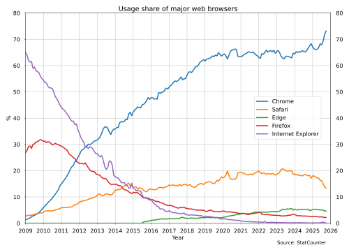

Omdat het geschikt maakt voor verschillende soorten bestanden, omdat het een neutrale naam is. Niet specifiek voor een bepaalde pagina of inhoud.
(Bron: DEV community)
Omdat Webontwikkelaars gebruiken tegenwoordig de HTML Living Standard van de WHATWG, een continu bijgewerkte specificatie die geen versienummers meer heeft en dagelijks evolueert om browserimplementaties en moderne webbehoeften te weerspiegelen.
(Bron: Edge.)
Omdat CSS niet meer als een groot, monolithisch pakket wordt ontwikkeld.
(Bron: Google.)
Het komt door meerdere redenen ervoor bijvoorbeeld: Verschillende rendering engines, ongelijke CSS ondersteuning en verschillen in JavaScriptimplementatie.
(Bron: BrowserStack.)
1. Chrome is een browser gemaakt door Google en is het meestgebruikte ter wereld.
2. Safari is gemaakt door Apple en is de tweede meestgebruikte.

(statistiek van StatCounter.)